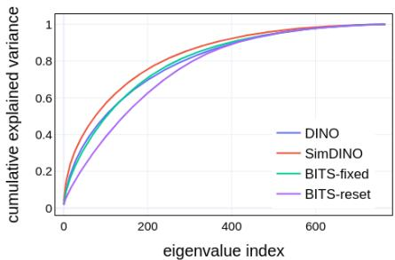
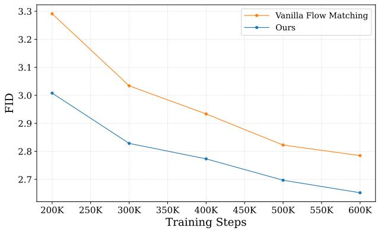
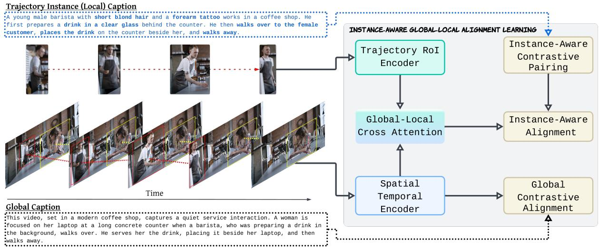
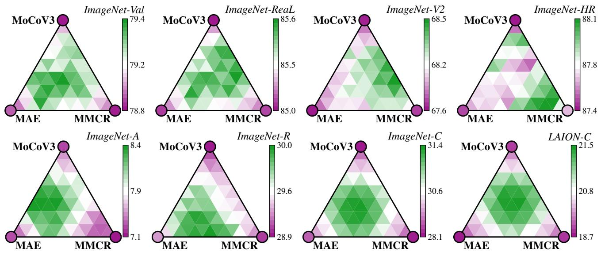

今日主线 · CVPR 2026 Open Access + arXiv
Spatial-SSRL：可验证空间 pretext 任务把视觉自监督、LVLM 后训练和空间表征学习直接连起来
可验证空间 pretext 任务把视觉自监督、LVLM 后训练和空间表征学习直接连起来。

可验证空间 pretext 任务把视觉自监督、LVLM 后训练和空间表征学习直接连起来。
P0
高相关；详见方法、贡献和实验边界。
方法：可验证空间 pretext 任务把视觉自监督、LVLM 后训练和空间表征学习直接连起来

P0高相关；详见方法、贡献和实验边界。
方法：把 SSL 表征目标改写为离散通信，直接面向通用视觉 backbone

P1高相关；详见方法、贡献和实验边界。
方法：将自监督表征学习内生化到 flow/生成预训练，适合和 RAE、REPA、DINO-latent 路线对读

P1高相关；详见方法、贡献和实验边界。
方法：实例级图文对齐补足全局 CLIP 式预训练的局部/时序盲点

P1中高相关；详见方法、贡献和实验边界。
方法：无标签 model soup 是低成本提升 SSL 模型鲁棒性和迁移性的工程路线